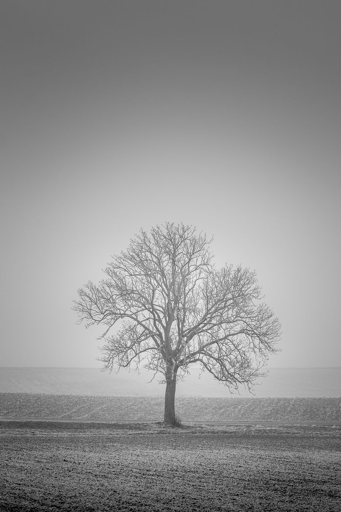
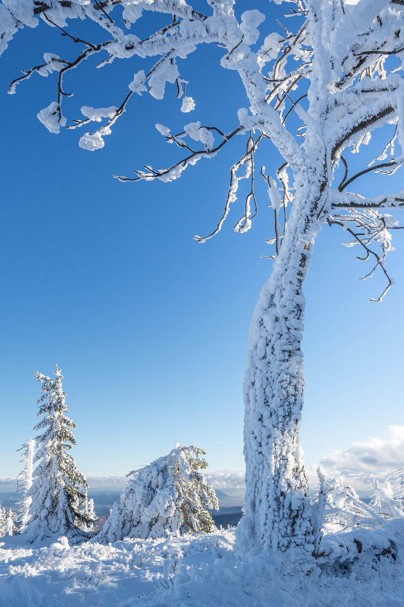
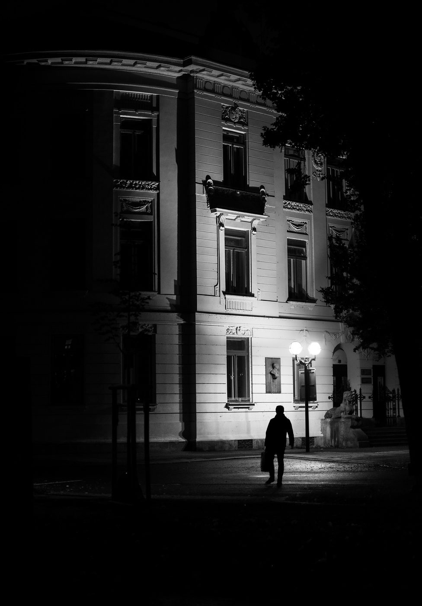
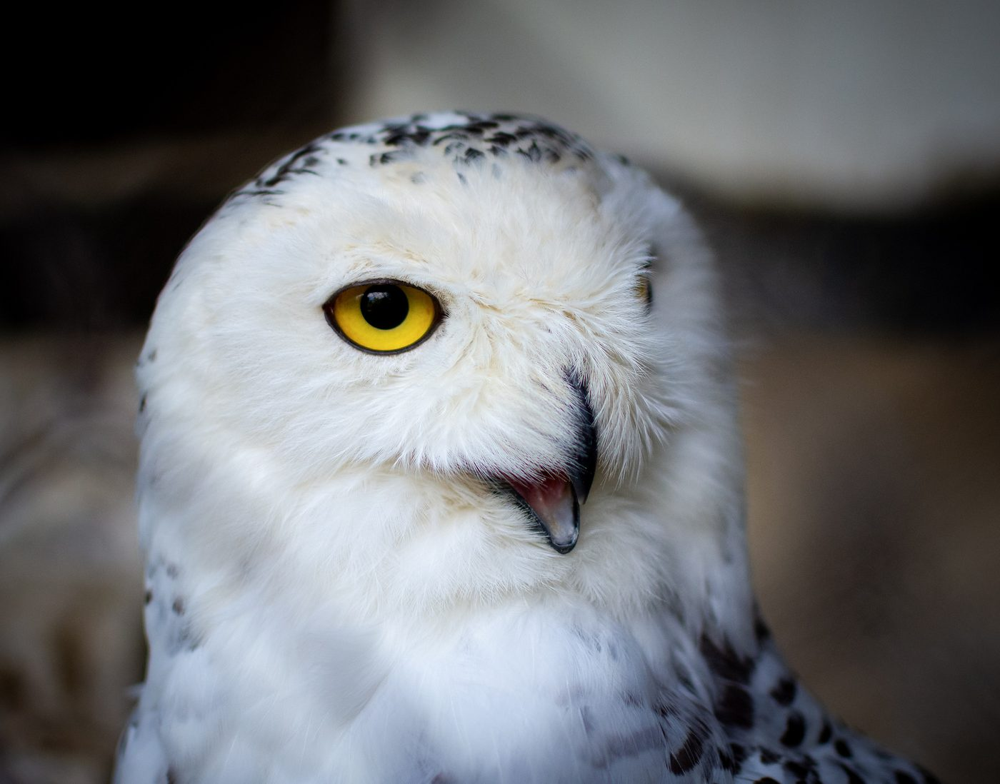

Patrik Novák
Stejná krajina, jiný pohled.

Ticho20 fotografií
Na hraně dne24 fotografií

Les40 fotografií

Zima21 fotografií

Architektura18 fotografií

Zvířata16 fotografií
Stejná krajina, jiný pohled.



